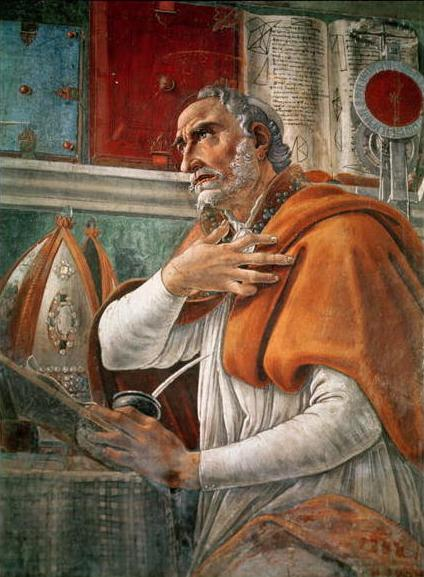

교부 철학(Patristic Philosophy)
2 ~ 8세기
고대 그리스도교의 교부들의 철학 사상입니다.
교부란 교회의 정통교리를 저술로써 설명하고, 성스러운 생활을 함으로써 신도의 모범이 된 사람들을 존중의 뜻에서 부르는 호칭입니다.
교부 철학은 유한한 인간이 참된 행복을 찾는 것은 영원하고 완전한 존재인 신과 하나가 될 때 가능하다고 보았습니다.
교부 철학은 플라톤의 이데아 세계관과 신플라톤 학파 등의 플라톤 철학에도 많은 영향을 받았으며,
후에 나올 스콜라 철학에도 큰 영향을 끼친 것이 특징입니다.
교부란 교회의 정통교리를 저술로써 설명하고, 성스러운 생활을 함으로써 신도의 모범이 된 사람들을 존중의 뜻에서 부르는 호칭입니다.
교부 철학은 유한한 인간이 참된 행복을 찾는 것은 영원하고 완전한 존재인 신과 하나가 될 때 가능하다고 보았습니다.
교부 철학은 플라톤의 이데아 세계관과 신플라톤 학파 등의 플라톤 철학에도 많은 영향을 받았으며,
후에 나올 스콜라 철학에도 큰 영향을 끼친 것이 특징입니다.
대표 사상가

아우구스티누스
354 ~ 430관련 인물: 토마스 아퀴나스, 플라톤
주요 저서 『고백록』
초기 기독교 교회의 대표적인 교부입니다.
아우구스티누스는 세계가 신의 이데아에 따라 그 의지에 의해 창조된 것이고, 원죄를 짊어진 인간은 악을 행하는 자유를 가질 뿐이며,
구원은 오로지 신의 은총에 의해 가능하고, 이 구원의 대상이 누가 되는가는 신의 영원한 예정에 의한 것이며(예정설),
교회가 이 은총을 매개한다고 주장하였습니다.